Humanoid-v5 mit PPO, TD3 und SACImmer wieder von vorn · Oliver Hessling · Kurs D21195UYS
| Hopper | HalfCheetah | Walker2d | Humanoid | |
|---|---|---|---|---|
| Beobachtungswerte | 11 | 17 | 17 | 348 |
| Gelenke | 3 | 6 | 6 | 17 |
| Raum | 2D | 2D | 2D | 3D |
Reward = 5,0 + 1,25 · vₓ − 0,1 · Σaᵢ² − 5e−7 · Σcfrc²
(Überleben) (vorwärts) (Steuerung) (Aufprall)
Humanoid-v5 hat keine offizielle Gelöst-Schwelle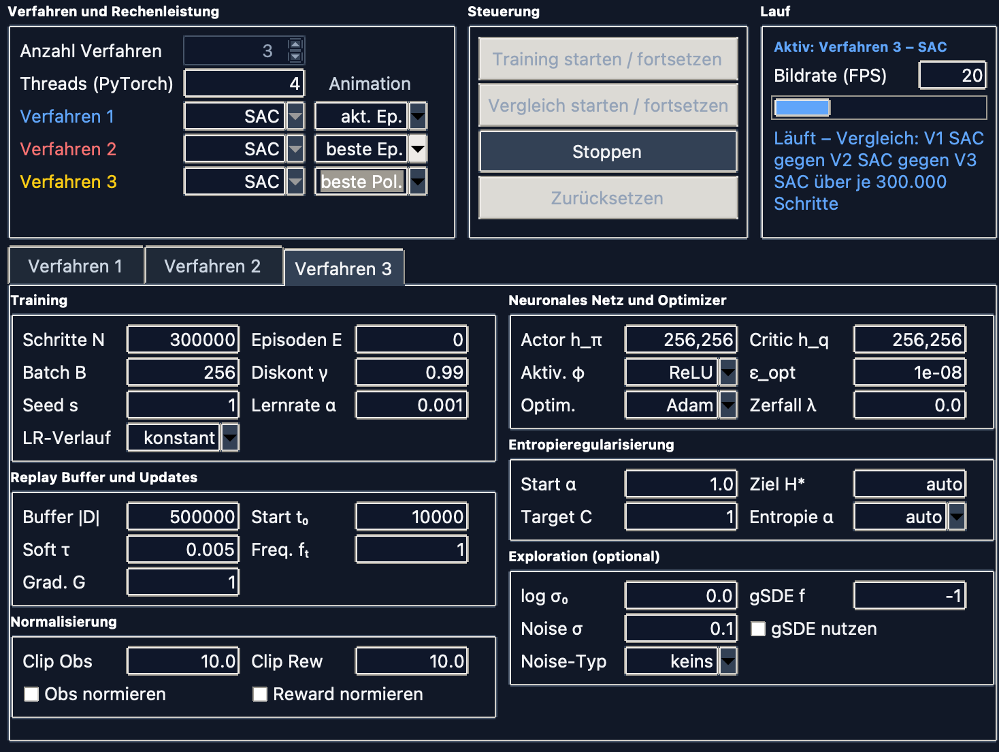
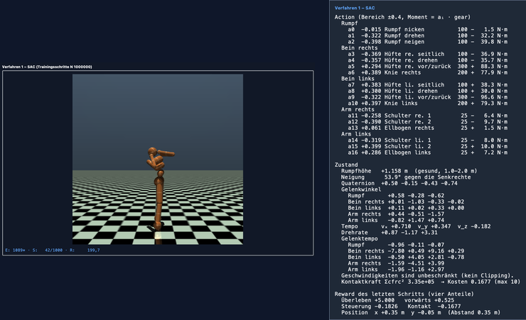
| Wert | |
|---|---|
| Hyperparameter | RL Baselines3 Zoo, unverändert |
| Budget | 300.000 Schritte je Verfahren |
| Episodengrenze | aus (E = 0) |
| Durchgänge | zwei, Zufallsstart 0 und 1 |
Schritte statt Episoden: Wer besser lernt, hat längere Episoden — und bekäme bei gleicher Episodenzahl mehr Daten.
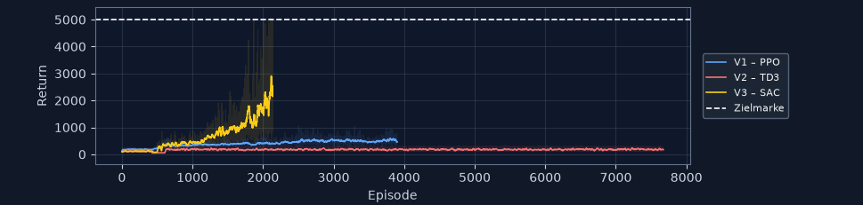
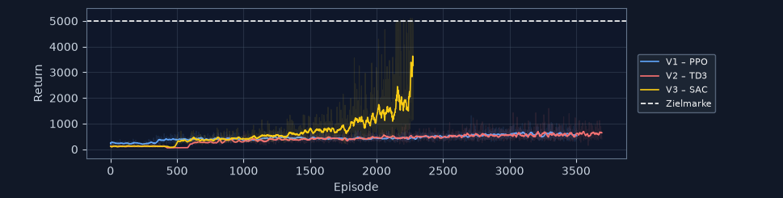
SAC gelb · PPO blau · TD3 rot — zwei Durchgänge, dasselbe Muster
| Ø der letzten 20 Episoden | PPO | TD3 | SAC |
|---|---|---|---|
| Return, Mittel beider Durchgänge | 491,9 | 407,3 | 2.711,6 |
| Beste Einzelepisode | 1.313 | 1.595 | 5.102 |
| Ø Episodenlänge | 89 / 96 | 39 / 134 | 434 / 651 |
| 1000 Schritte durchgehalten | 0 % | 0 % | 15 / 40 % |
Der schlechtere SAC-Lauf schlägt den besseren PPO-Lauf noch um das Vierfache.
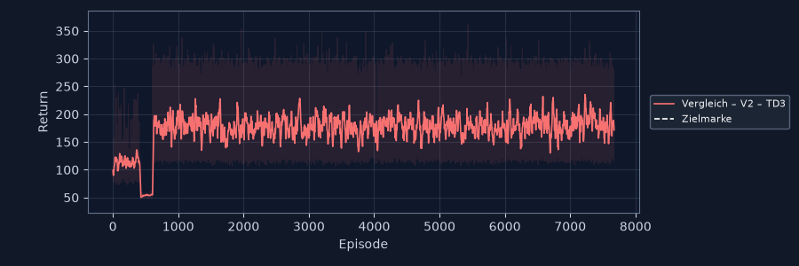
Zufallsstart 0 — 7.673 Episoden flach bei 172
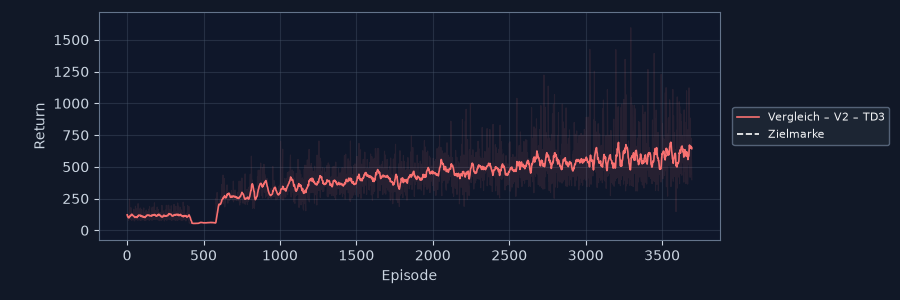
Zufallsstart 1 — steigt auf 643, beste Episode 1.595
1e−3 — dreimal SACEinwand: 300.000 Schritte sind bei PPO nur 3 % seines Profilbudgets, bei TD3 und SAC 15 %.
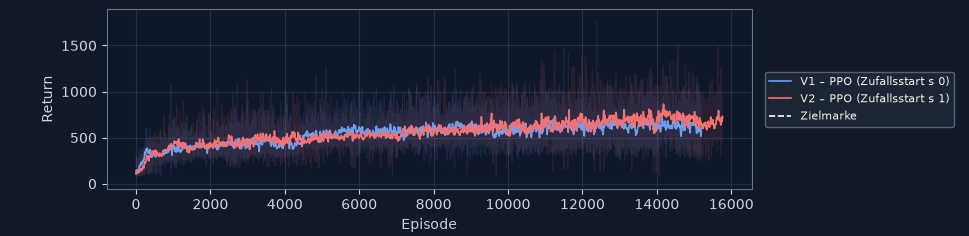
| PPO | 300.000 | 1,5 Mio = 15 % |
|---|---|---|
| Ø Return | 491,9 | 686,6 (+40 %) |
| 1000 Schritte durchgehalten | 0 % | 0 % |
| Tempo | Episodenlänge | Ø Return | |
|---|---|---|---|
| PPO nach 1,5 Mio | 1,60 m/s | 112 | 730 |
| SAC nach 300.000 | 0,22 m/s | 651 | 3.269 |
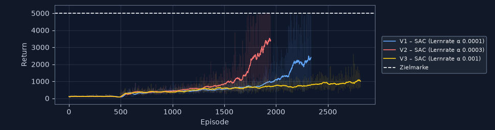
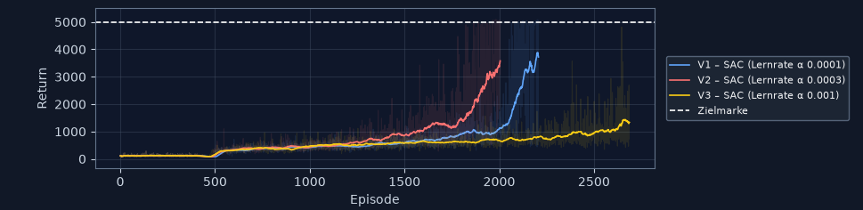
| kleiner | empfohlen | größer | |
|---|---|---|---|
| Lernrate | 1e−4 |
3e−4 |
1e−3 |
Bestes Verfahren aus 2.2, drei Ausprägungen, je zwei Durchgänge
| Ø der letzten 50 Episoden | 1e−4 |
3e−4 |
1e−3 |
|---|---|---|---|
| Return, Mittel | 3.064 | 3.475 | 1.172 |
| Zielmarke erreicht | 0 / 12 % | 6 / 34 % | nie |
| Streuung zwischen den Durchgängen | 43 % | 6 % | 28 % |
1e−3 ist der Abstand eindeutig — Faktor 3, in beiden Durchgängen1e−4 entscheidet nicht der Return: Der dreht sich mit dem Seed| Durchgang 2 | 1e−4 |
3e−4 |
|---|---|---|
| 1000 Schritte durchgehalten | 68 % | 44 % |
| Zielmarke erreicht | 12 % | 34 % |
| Strecke vorwärts | 1,9 m | 2,5 m |
Wer die Marke überschreitet, hat sich bewegt. Die kleine Lernrate lernt sicheres Stehen, der Profilwert vorsichtiges Gehen.
Alle vier: je 1000 Schritte in 15 Sekunden Echtzeit
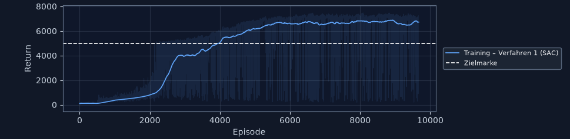
| 300.000 | 7 Mio | |
|---|---|---|
| Ø Return | 2.154 / 3.269 | 6.718 |
| Tempo | 0,21 m/s | 1,95 m/s |
| Strecke | 1,5 m | 28,6 m |
| durchgehalten | 15 / 40 % | 92 % |
Die Figur läuft · Zoo-Benchmark 6.232 übertroffen
Dieselben 15 Sekunden wie am Anfang: damals fällt sie immer wieder, jetzt ein Durchlauf
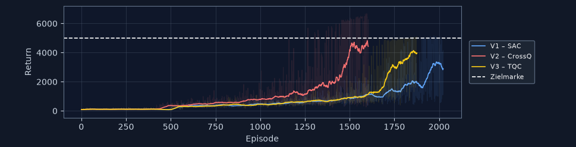
300.000 Schritte für alle drei — Seitenprojekt mit CrossQ und TQC
| bei 300.000 | SAC | CrossQ |
|---|---|---|
| Ø Return | 2.893 | 4.435 |
| Zielmarke erreicht | 14 % | 64 % |
| Tempo | 0,21 m/s | 1,06 m/s |
| Strecke | 2,1 m | 14,0 m |
CrossQ nach 600.000 Schritten — Ø 6.988, aufrecht joggend. Mehr als SAC nach 7 Millionen, bei einem Zwölftel der Daten.